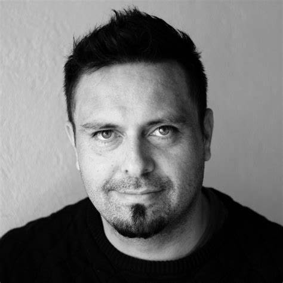
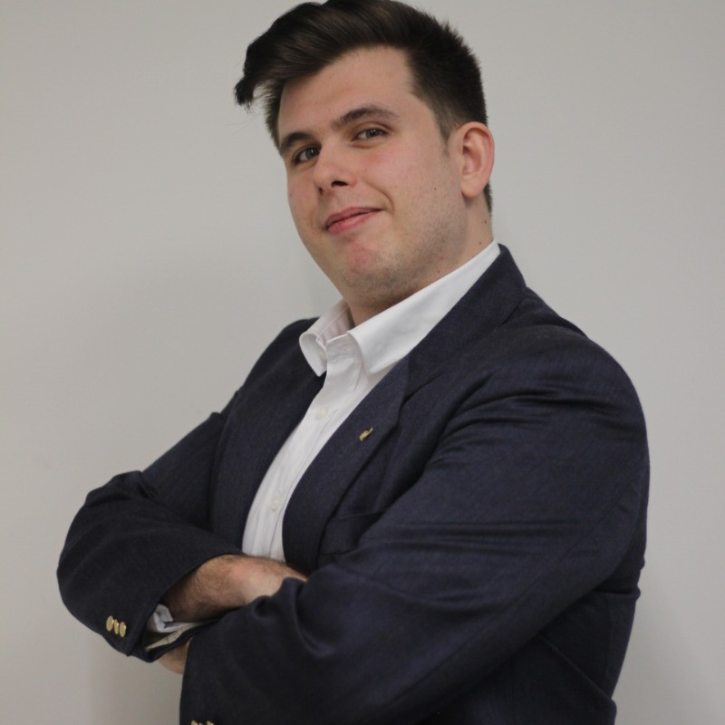
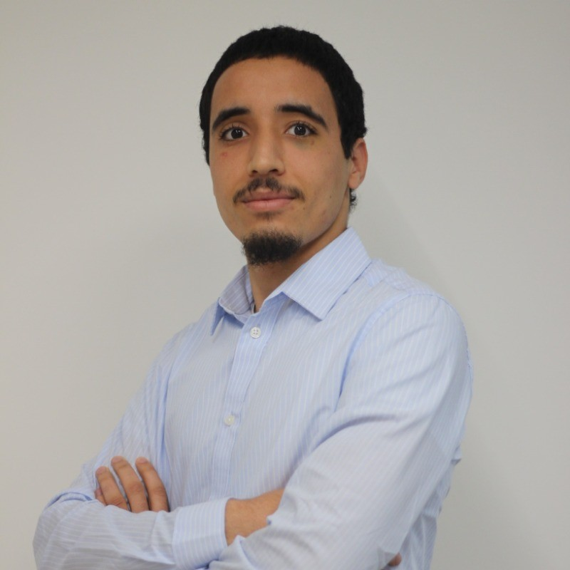

Andrés Valbuena Torres
Andrés Valbuena Torres es el responsable de Inetum Academy en Tarragona, además de Scrum Master y Senior UX Designer. Con una sólida trayectoria en diseño gráfico, web y experiencia de usuario, Andrés ha trabajado en una amplia gama de proyectos, desde branding hasta desarrollo web y producción de contenido audiovisual. En su rol actual, se enfoca en la formación y aplicación de metodologías ágiles, impulsando la innovación y la colaboración dentro de Inetum. Su experiencia incluye el uso de frameworks como Vue y herramientas de colaboración como GitHub
Miguel Zambrano
Miguel Zambrano es Técnico de Desarrollo en el equipo de GenAI de Inetum. Graduado en Desarrollo de Aplicaciones Multiplataforma, realizó su beca en Inetum con el equipo de Telefónica, donde adquirió conocimientos en bases de datos, Excel, frontend y backend.Desde junio de 2023, colabora en el proyecto de IAs generativas de GenAI, alimentando y entrenando las IAs con bases de conocimiento en vectores. Su experiencia en Inetum le ha permitido adquirir conocimientos en arquitectura y lógica de aplicaciones, que aplica en su trabajo diario.
Angelo Lauricella
Angelo Lauricella es un profesional especializado en desarrollo Full Stack, actualmente trabajando en el equipo de banca de Toyota. Inició su formación académica con un grado en Sistemas Microinformáticos y Redes. Posteriormente, completó un ciclo superior en Desarrollo de Aplicaciones Web. Durante este ciclo, Angelo participó en un programa de Formación Profesional Dual con Inetum, donde adquirió las competencias necesarias para su desarrollo profesional. Esta experiencia fue crucial para prepararlo para su rol actual, permitiéndole aplicar de manera efectiva sus conocimientos en el campo de la tecnología.
Zakaria Haddoudi
Zakaria Haddoudi forma parte del equipo de Ciberseguridad en Inetum TarracoSpace. Graduado del Ciclo Superior de DAM en el instituto Vidal i Barraquer, se unió a la empresa en junio de 2023 como becario y ha continuado trabajando en proyectos de ciberseguridad con Telefónica, integrando productos en herramientas de fácil usabilidad para los clientes. Desde su ingreso, Zakaria ha aprendido sobre las dinámicas de trabajo y metodologías ágiles, superando sus expectativas. En estos dos años, ha adquirido conocimientos en herramientas de P-Testing, frameworks de frontend como VUE, y colaboración con GitHub y APIs de terceros.